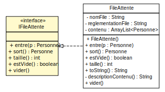
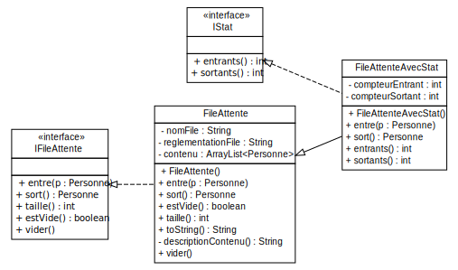

<!doctype html>
<html lang="en">
    <head>
        <meta charset="utf-8">
        <title>reveal-md</title>
        <link rel="stylesheet" href="./css/reveal.css">
        <link rel="stylesheet" href="./css/theme/white.css" id="theme">
        <link rel="stylesheet" href="./css/highlight/zenburn.css">
        <link rel="stylesheet" href="./css/print/paper.css" type="text/css" media="print">

    </head>
    <body>

        <div class="reveal">
            <div class="slides"><section  data-markdown><script type="text/template">### TP8 - Interfaces
----------------------
</script></section><section  data-markdown><script type="text/template">#### Rappel interface

> La notion d’interface permet de  définir un contrat pour un ensemble de classes.

> Par contrat on entend un ensemble d’opérations, incluant des opérations d’accès à des données, 
que l’on s’attend à avoir dans toutes les classes respectant ce contrat.
</script></section><section  data-markdown><script type="text/template">#### Rappel interface
Une interface regroupe :
* des méthodes d'instance 
    <pre><code>public void mamethode();</pre></code>
* des méthodes d'instances abstraites
* des méthodes d'instances publiques par défaut
    <pre><code>public default void mamethode(){...}</pre></code>
* des méthodes statiques
    <pre><code>public static void mamethode(){...}</pre></code>
* des attributs de classe constants public 
</script></section><section  data-markdown><script type="text/template">#### Rappel interface
On ne peut pas mettre :
* de constructeurs
* d'attributs d'instances
* de code dans les méthodes
<small>(en dehors des methodes par défaut et des méthodes statiques)</small>
</script></section><section  data-markdown><script type="text/template">#### Le mot clé "defaut"
* Introduit en Java 8
* Permet d'implementer des méthodes dans l'interface
* Evite de rompre le "contrat" entre l'interface et les classes
<pre  width="100%" height="100%"><code>
package tp7;
import tp6.Personne;
public interface IFileAttente {
	...
    public default String getReglementation(){
		return "sans priorités";
	}
}
</code></pre></script></section><section  data-markdown><script type="text/template">
#### Modélisation UML


<small> Exemple d'interface de la classe FileAttente </small>
</script></section><section  data-markdown><script type="text/template">#### Exemple d'interface

<pre  width="100%" height="100%"><code>
package tp7;
import tp6.Personne;
public interface IFileAttente {
	public void entre(Personne p);
	public Personne sort();
	public int taille();
	public boolean estVide();
	public void vider();
}
</code></pre>

<pre  width="100%" height="100%"><code>
public class FileAttente implements IFileAttente{
...
}
</code></pre>
</script></section><section  data-markdown><script type="text/template">#### Modélisation UML


</script></section><section  data-markdown><script type="text/template">#### Exemple d'utilisation d'interface
<pre><code>
public static &lt;E&gt; extends Comparable&lt;E&gt;&gt; E max(List&lt;E&gt; c) {
    if (c.isEmpty()){ return null;}
    E max = c.get(0);
    for (E e : c){ if (e.compareTo(max) > 0){ max = e; }}
    return max;
}
</code></pre>

* La méthode max ne manipule pas de classes directement

> Si on veut l'utiliser avec la classe Etudiant il suffit que la classe Etudiant 
implémente l'interface Comparable
</script></section><section  data-markdown><script type="text/template">#### Interface Comparable
<pre><code>public class Etudiant implements Comparable&lt;Etudiant&gt;{ 
    ...
    @Override
    public int compareTo(Etudiant o) {
        return this.getNom().compareTo(o.getNom());
    }
 }</code></pre>

* L'interface Comparable garantie que les étudiants sont comparables entre eux
et permet donc le tri, la recherche d'un max etc...

<pre><code>// Tri d'une liste d'étudiant par ordre lexicographique
Collections.sort(listeEtudiant);
// Recherche du max
Collections.max(listeEtudiant);
</code></pre>
</script></section><section  data-markdown><script type="text/template">#### Interface Comparator

* Permet d'implementer d'autres façons de comparer deux éléments
* Exemple : Comparer des personnes en fonction de leur age
<pre><code>// Tri d'une liste d'étudiant en fonction de leur age
Collections.sort(listeEtudiant, new ComparateurAge());
</code></pre>
</script></section></div>
        </div>

        <script src="./lib/js/head.min.js"></script>
        <script src="./js/reveal.js"></script>

        <script>
            function extend() {
              var target = {};
              for (var i = 0; i < arguments.length; i++) {
                var source = arguments[i];
                for (var key in source) {
                  if (source.hasOwnProperty(key)) {
                    target[key] = source[key];
                  }
                }
              }
              return target;
            }

            // Optional libraries used to extend on reveal.js
            var deps = [
              { src: './lib/js/classList.js', condition: function() { return !document.body.classList; } },
              { src: './plugin/markdown/marked.js', condition: function() { return !!document.querySelector('[data-markdown]'); } },
              { src: './plugin/markdown/markdown.js', condition: function() { return !!document.querySelector('[data-markdown]'); } },
              { src: './plugin/highlight/highlight.js', async: true, callback: function() { hljs.initHighlightingOnLoad(); } },
              { src: './plugin/zoom-js/zoom.js', async: true },
              { src: './plugin/notes/notes.js', async: true },
              { src: './plugin/math/math.js', async: true }
            ];

            // default options to init reveal.js
            var defaultOptions = {
              controls: true,
              progress: true,
              history: true,
              center: true,
              transition: 'default', // none/fade/slide/convex/concave/zoom
              dependencies: deps
            };

            // options from URL query string
            var queryOptions = Reveal.getQueryHash() || {};

            var options = {"slideNumber":"c/t","controls":false,"center":false};
            options = extend(defaultOptions, options, queryOptions);
        </script>


        <script>
            Reveal.initialize(options);
        </script>
    </body>
</html>
